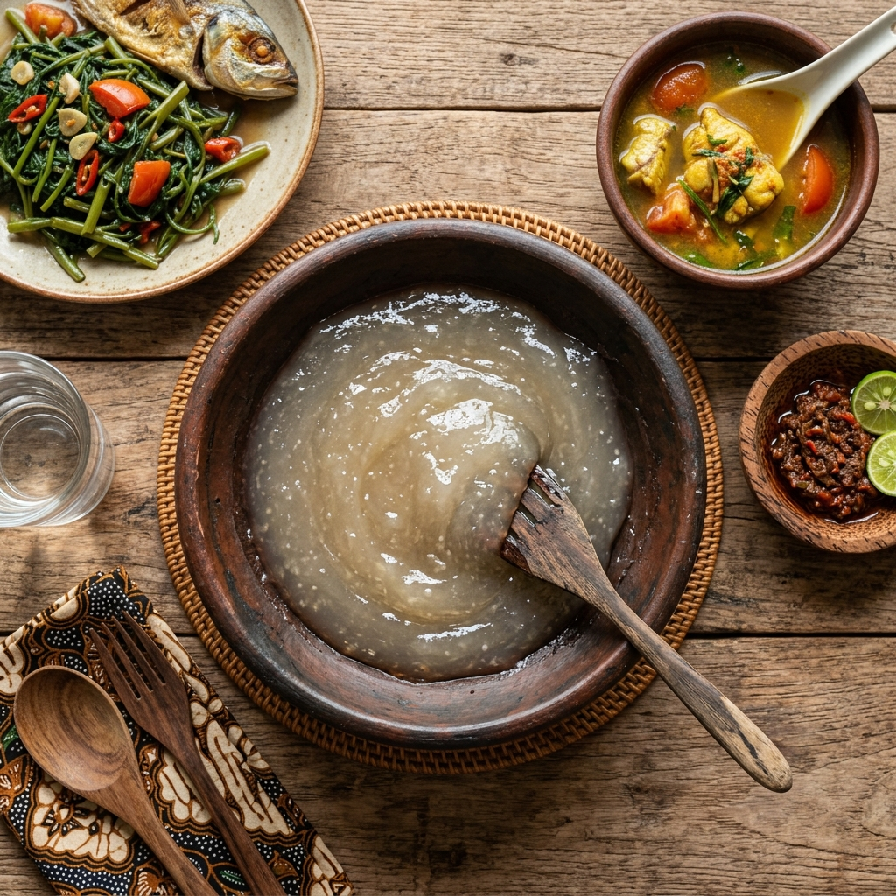
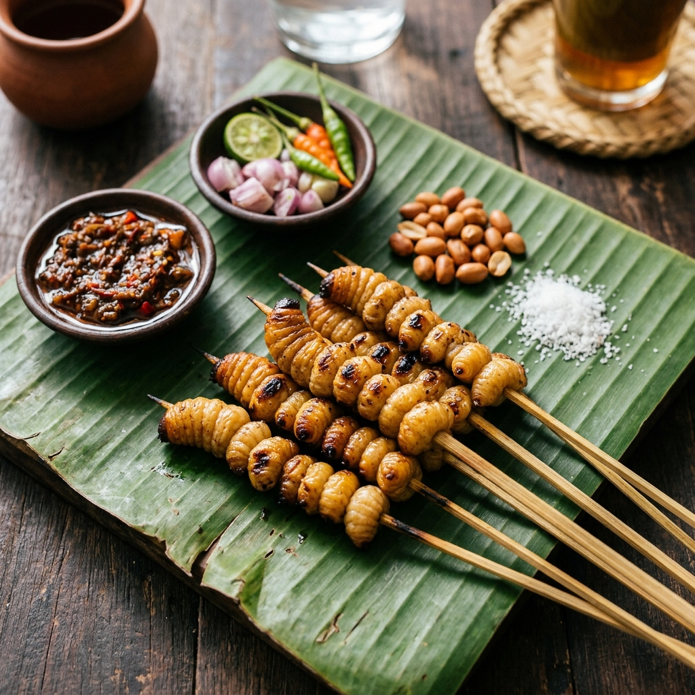
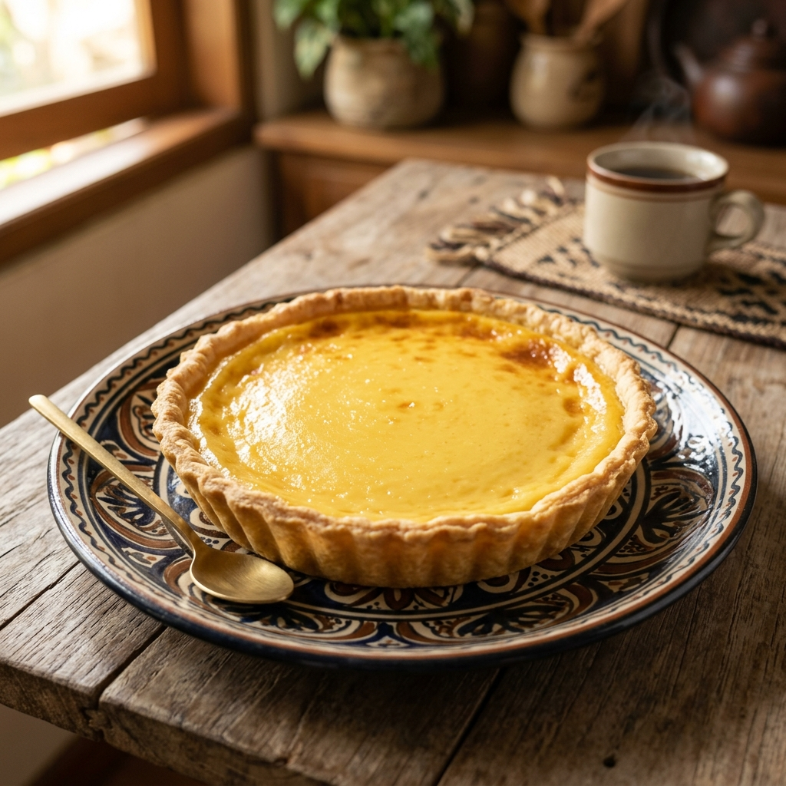

Makanan PokokPapeda & Ikan Kuah Kuning
📍 Raja Ampat
Bubur sagu tradisional dengan ikan kuah kuning rempah, hidangan sakral Papua.
Lihat DetailMelestarikan budaya lokal melalui teknologi digital dan dokumentasi ensiklopedis.
Kuliner Papua bukan sekadar kebutuhan biologis, melainkan representasi dari hubungan harmonis antara manusia, alam, dan leluhur. Setiap hidangan membawa cerita sejarah dan nilai kearifan lokal yang diwariskan turun-temurun.
Melalui platform ini, kami mendokumentasikan kekayaan boga bahari dan hasil bumi Papua sebagai arsip digital untuk generasi mendatang.
Pelajari Latar Belakang
Makanan Pokok📍 Raja Ampat
Bubur sagu tradisional dengan ikan kuah kuning rempah, hidangan sakral Papua.
Lihat Detail
Lauk Pauk📍 Mimika
Sate ulat sagu berprotein tinggi, camilan khas masyarakat pedalaman Papua.
Lihat Detail
Camilan📍 Fakfak
Kue tart custard khas Fakfak, hasil akulturasi budaya Eropa dan Papua.
Lihat Detail